Reporting through the Single Reporting Platform
A walkthrough of the central platform manufacturers use to report actively exploited vulnerabilities (AEV) and severe incidents in the European Union, from first-time registration to the final report, with every data field ENISA requires at each step.
Status · the platform is live since 11 September 2026. It opened that morning at 11:24 UTC at portal.cra-srp.enisa.europa.eu, alongside ENISA’s registration, submission and interface guidance and a glossary itemising every reporting field. This page follows those sources. They are still moving — the FAQ and the glossary were both edited on 7 September 2026, the glossary without changing its version number — so check the originals before you rely on a detail. The portal serves only the reporting obligation under Article 14 CRA.
- Go-live
- Live since 11 September 2026 (mandatory reporting)
- Open-source stewards
- Reporting obligations under Art. 24(3) apply from 11 December 2027, per Art. 71(2)
- Voluntary reporting
- Not at launch; a later phase, no date given
- Portal address
- portal.cra-srp.enisa.europa.eu · sign in with EU Login
- AR User Manual
- ENISA’s AR User Manual — PDF, 55 pages, published 9 September 2026. The fullest description of the platform so far, with a screenshot of every screen; this guide’s walkthrough now draws on it. The platform’s Terms and Conditions were published the same day.
- Portal language
- English only at launch; ENISA is translating the supporting material, not the platform
- Manufacturer-facing API
- None at the initial release; ENISA says it may be considered in a future phase
- Built by
- Uni Systems (lead), Wavestone & Luxembourg House of Cybersecurity · €11M, four-year public tender
With the early warning notification, a continuously updateable notification is generated. The final report is not linked to "becoming aware". For AEV, the final report has to be submitted within 14 days after a corrective/mitigating measure is available (not 14 days after becoming aware). For severe incidents, the final report is due within one month after the 72h notification (not one month after becoming aware).
What “becoming aware” means. You must report an actively exploited vulnerability (AEV) or a severe incident (SI) once you become aware of it (Article 14), and the 24h clock starts when you become aware. The Commission’s (draft) CRA guidance ties the "becoming aware" to an initial assessment: When you detect a suspicious event, or a third party flags one, you should assess the event promptly, and you are deemed to have "become aware" only when, after that assessment, you have a reasonable degree of certainty that a vulnerability in your product is being actively exploited by a malicious actor, or that a severe incident has occurred and compromised your product’s security.
To ensure consistency across regulations and frameworks, the guidance aligns “becoming aware” with recital 31 of the NIS2 Implementing Regulation (EU) 2024/2690 and the GDPR personal-data-breach guidelines, mirroring the approach used under NIS2 and DORA. There is no explicit duty to actively monitor databases or channels to obtain that knowledge, and active exploitation you were already aware of before 11 September 2026 need not be reported retroactively.
Registration
Before you can submit, you have to register the user and link the user to the manufacturer. There is no need to pre-register, and ENISA explicitly advises against it: register and begin validation when you need to submit a specific notification, rather than creating an account pre-emptively. As part of the registration you sign in with a personal EU Login account and link yourself to a manufacturer. Your association to the manufacturer is forwarded to the national CSIRT of the manufacturer for validation, but you are able to submit straight away, before that validation has been completed by the CSIRT. It is a one-time setup; afterwards your account is reused for every report. How further colleagues are added, and what happens when the person holding the account leaves, is covered under Accounts and roles.
Don't register out of curiosity. Only sign up if you manufacture products with digital elements. Your account is linked to a specific manufacturer and that association is shared with the national authorities for validation. ENISA gives the same advice, with the reason: the validation procedure differs per CSIRT and is that CSIRT’s responsibility.
| Field | Status | Note |
|---|---|---|
| Before the form: two choices on the landing screen | ||
| Role | Required | “Assigned Representative”. Hovering the “i” explains each role. |
| CSIRT designated as coordinator | Required | A drop-down. Picking the right one is your responsibility — and since 7 September 2026 ENISA states that a notification sent to the wrong one may be invalidated and have to be resubmitted. |
| EU Login account | Required | Personal, with multi-factor authentication. Create it in advance if you do not have one; everything else takes minutes. |
| Personal details — pre-filled from EU Login, you confirm them | ||
| First name | Required | Pre-filled. |
| Last name | Required | Pre-filled. |
| Required | Pre-filled from the EU Login account. | |
| Legal name | Dropped | On ENISA’s guidance screenshot of 7 September, but absent from the AR User Manual of 9 September — its screenshot of this step shows three fields, and its text lists only “First Name, Last Name, Email”. The field was never explained anywhere; ENISA has since confirmed it was dropped (10 September). |
| Manufacturer details | ||
| Manufacturer name | Required | Omitting it returns an error and keeps “Continue” disabled. |
| Additional information | Optional | ENISA’s guidance screenshot marked it “Required field”; the AR User Manual calls it optional and its newer screenshot carries no badge. What belongs in it is still documented nowhere — it is what the CSIRT sees when deciding whether to verify you, so treat it as the place to say who you are and why you represent this manufacturer. |
| Manufacturer address | Coming back | Listed in ENISA’s guidance text, on no screenshot yet — neither ENISA’s nor the manual’s. ENISA confirmed on 10 September, on request, that the field will be restored to the form. The manufacturer record already carries an address under Settings. |
- 1Open the portal.
https://portal.cra-srp.enisa.europa.eu— live since 11 September 2026. ENISA’s registration guidance carried a “URL to be provided at launch” placeholder until 8 September 2026; it now names this address too, so guidance and FAQ agree. The platform is in English only. - 2Select user type. As a manufacturer, choose “Assigned Representative”.
- 3Select the national entry point. Set the responsible CSIRT. For a German company, that is “CSIRT Germany”.
- 4Sign in via EU Login. The personal account is then linked to the manufacturer. ENISA calls this role Assigned Representative — not authorised representative, which under CRA Art. 3(13) means something else: a separate economic operator acting under a written mandate, with its own obligations under Art. 18. Same abbreviation, different concept. EU Login requires multi-factor authentication.
- 5Accept the legal agreement, then confirm your personal details. They arrive pre-filled from EU Login; you are confirming them, not typing them.
- 6Enter the manufacturer details and continue. The association is provisional and goes to the chosen CSIRT for validation. If you registered by invitation as a Secondary AR, these details are already filled in and you only accept them — and an invitation expires after seven days.
- 7Choosing the correct CSIRT is the manufacturer’s responsibility. The portal does not verify this, and is notified first for future reports.
- 8Validation by the CSIRT. The CSIRT verifies the person-to-manufacturer association out of band; the method is decided per country. The status is visible in the user settings.
- 9Ability to report. Successful submission of a report does not depend on successful validation of the account.
- 10Dashboard. After registration the national CSIRT dashboard appears, identifiable by the flag in the top right.
- 11Multiple countries. The same account can be assigned to manufacturers in other Member States by choosing a different national entry point (example: Greece). Validation is then performed by that country’s CSIRT.
-
1
Choose your role

The landing screen. Hovering the “i” explains each role. Two choices stand between you and the form. This is the first: pick Assigned Representative.
Field on this screen Status What goes in it Role Required Assigned Representative. Not authorised representative in the Art. 3(13) sense — see the warning above. From practice. Give the Primary AR role to the person who will have the facts when the clock is running — the product-security or PSIRT lead — not to whoever owns the reporting obligation on paper. The 24-hour Early Warning is written from what is known, and that person knows it first; Legal and Compliance are better placed as a Secondary AR, reading along. Register when you have a notification to file, as ENISA advises, but have the parts ready before then: an EU Login account with MFA for the intended AR, the decision which CSIRT is your coordinator (next step), and the manufacturer details.
-
2
Choose the CSIRT designated as coordinator

The CDaC drop-down. This choice is yours to get right. The second choice, and the consequential one: it decides who receives everything you later submit.
Field on this screen Status What goes in it CSIRT designated as coordinator Required Normally the Member State of your main establishment in the EU (Art. 14(7) CRA). Since 7 September 2026 ENISA states that a notification sent to the wrong one may be invalidated and have to be resubmitted. From practice. The rule is Article 14(7): the CSIRT of the Member State where the manufacturer has its main establishment — the registered seat, not where the product team sits. A group with development, sales and holding companies in several Member States picks the seat of the entity that places the product on the market under its name. A manufacturer with no EU establishment picks the Member State of its authorised representative, or failing that of the importer. If you are still unsure, pick the most plausible CSIRT and register: verification runs in parallel, and a CSIRT that is not the right one will say so before it costs you a deadline. One account can later be associated with further manufacturers in other Member States, each with its own coordinator — this choice is per manufacturer, not per person.
-
3
Confirm your personal details
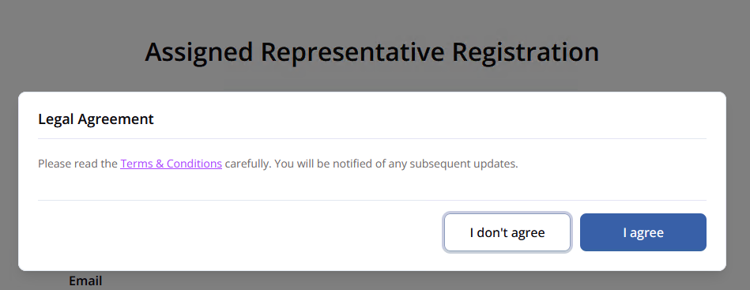
Before this step: EU Login, then the Legal Agreement. It links to the platform’s Terms and Conditions; “I don’t agree” ends the registration. 
Step 1 of 2 as ENISA’s guidance page shows it (7 September): four fields. 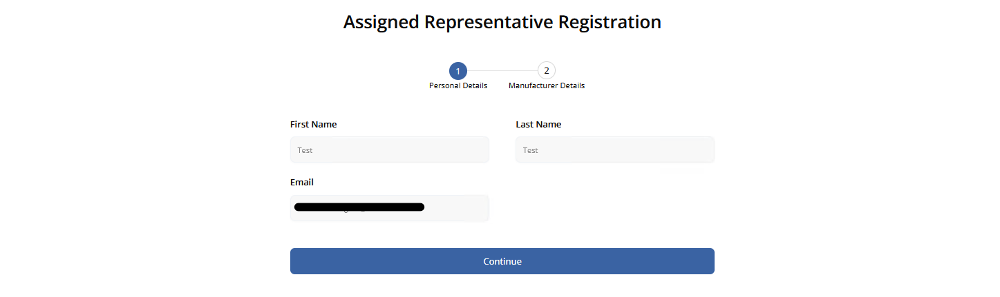
The same step in the AR User Manual (9 September): three fields. Legal name is gone. After the EU Login sign-in and the legal agreement. Everything here arrives filled in.
Field on this screen Status What goes in it First Name Pre-filled From your EU Login account. Last Name Pre-filled From your EU Login account. Email Pre-filled From your EU Login account. This is where invitations and alerts go. Legal name (for legal entities) Dropped Present on the guidance page’s screenshot, absent from the manual’s newer one and from the manual’s text — and ENISA has confirmed the field was dropped. If an older screen still shows it, leave it empty. From practice. Use the EU Login account you already have — most people have one from a Commission portal or CIRCABC — and switch on multi-factor authentication before the first sign-in, or the login fails. Two things about the fields you cannot edit here: if the name or address is wrong, the fix is in your EU Login profile, not in the SRP; and the e-mail shown is where every invitation, deadline reminder and invalidation will land. It must be an address that is read during an incident, so set up forwarding to a team mailbox rather than leaving it to one inbox and one holiday.
-
4
Enter the manufacturer details

Step 2 of 2 on the guidance page: Additional Information badged “Required field”. 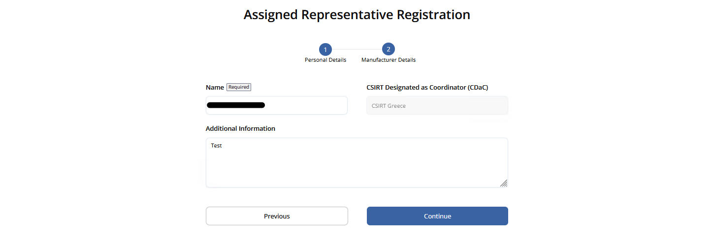
The same step in the manual: only Name carries the badge. The manufacturer you will report for. Omitting the name returns an error and leaves “Continue” disabled. The manual adds one thing the page does not: the CDaC is fixed by your choice in step 2 and cannot be changed here.
Field on this screen Status What goes in it Name Required The manufacturer’s name. CSIRT Designated as Coordinator (CDaC) Pre-filled Greyed out — carried over from step 2 above, not editable here. Additional Information Optional “Required field” on the guidance page’s screenshot; optional in the manual, and unbadged on its screenshot. Still undocumented either way — and still what the CSIRT reads when verifying you. ENISA’s text was ahead of the form. The registration guidance lists “manufacturer name, manufacturer address, additional information”; neither screenshot above has an address field. ENISA confirmed on 10 September, on request, that the field will be brought back — so the text stands, and the form is being brought in line with it. Until a capture shows the field, the table above records it as coming back rather than present.
From practice. Write the manufacturer name exactly as it stands in the commercial register, legal form included — “ACME Devices GmbH”, not “ACME”. The field is copied read-only into every notification you will ever file, and it is what the CSIRT matches against the register when it verifies you. Additional Information is optional and documented nowhere, but it is the one thing the CSIRT reads before deciding whether you are who you say you are — so make verification quick: the full legal entity with its register or VAT number and seat, your function, who appointed you as Assigned Representative, and a management contact for the CSIRT to call back. Two lines of that beat an empty box by days.
-
5
If you were invited: accept instead

The Secondary AR path as the guidance page shows it: the same four fields, reached from an invitation e-mail. 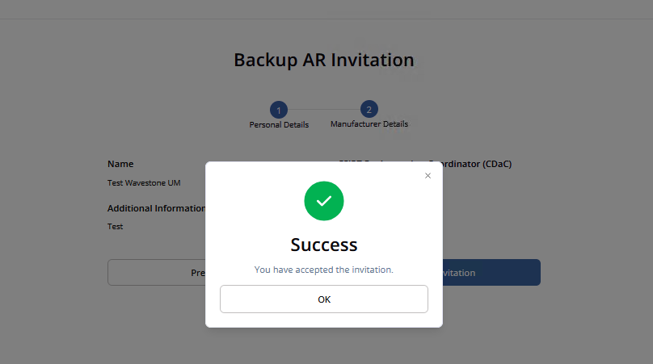
From the manual: the manufacturer details arrive pre-filled, and “Accept invitation” ends with this confirmation. A Secondary AR does not choose a role or a CSIRT. The link in the invitation leads here, the manufacturer details are already filled in, and the last button says “Accept invitation”. The link expires after seven days; after that the record turns to “Invitation Expired”.
Field on this screen Status What goes in it First Name Pre-filled From your EU Login account, as on the Primary path. Last Name Pre-filled From your EU Login account. Email Pre-filled The address the invitation was sent to. It cannot be swapped for another one here. Legal name (for legal entities) Dropped The manual’s screenshot of this very screen (“Backup AR Invitation”) has three fields; its text lists three; ENISA has confirmed the field was dropped. The guidance page’s text and screenshot still show four. Step 2 of 2 — manufacturer details Name, CDaC, Additional Information Pre-filled All three arrive from the Primary AR’s registration. You confirm them; the button reads “Accept invitation” rather than “Continue”. Three things the manual adds. The invitation can only be sent by a Primary AR whose own association is already Verified. Open the link with the EU Login account the invitation was addressed to — a different account authenticates fine and is simply not associated with the manufacturer. And if you already have an SRP account, the same link works to add this manufacturer as a further association: you confirm the same details, click “Accept invitation”, and your existing account and associations are untouched. Seven days either way; after that the request reads “Invitation Expired”.
From practice. Have at least one Secondary AR, for access alone: a single account in front of a 24-hour deadline is a single point of failure. But do not expect the portal to be a team workspace — a Secondary AR sees only the notifications they submitted and the drafts they created, never a colleague’s, so two people cannot work one draft. The first thing that trips people up is not the link but the button: the Primary AR can only invite once their own association shows Verified — before that the function simply is not there. Then the mechanics: open the invitation with the EU Login account it was sent to (another account signs in fine and is silently not associated), and do it within seven days.
Screenshots: ENISA, CRA SRP guidance — AR User registration, retrieved 7 September 2026. Reproduced with acknowledgement per the ENISA Legal Notice. Additional screenshots from ENISA’s CRA SRP – AR User Manual (PDF, Version 1.1), retrieved 10 September 2026. Field meanings from the SRP Glossary.
Early Warning
Submitted within 24 hours of becoming aware. You declare whether it is an incident or a vulnerability (the form then shows the matching fields), give it a title and summary, and select the countries of distribution, which determines who else is notified.
Only the fields that must be filled in to submit an Early Warning. Everything else on the form is optional at this stage and can be added later — see Every field, explained.
| Field | Status | Note |
|---|---|---|
| Both notification types | ||
| Notification type (Vulnerability/Incident)1 | Required | Chooses which set of fields the form shows from here on. |
| Title7 | Required | Max. 255 characters. Enough to recognise product and issue, no confidential detail. |
| Summary8 | Required | Max. 4,000 characters: what happened, affected product or version, known impact, current mitigation status. |
| Manufacturer name9 | Required | Read-only. The platform fills this in from your registration; you only check that it is the right manufacturer. |
| Member States where product available (Concerned CSIRT)10 | If available | Your own CSIRT is pre-selected; add every other Member State where the product is available. This is what decides who else gets the notification. |
| Product Name11 | Required | Commercial name as it appears to users. |
| Product version12 | Required | Version, release, build or model. A range is acceptable. |
| Vulnerability only | ||
| Date/time when you become aware of the Actively Exploited Vulnerability [1]v30 | Required | The date and time your 24 h, 72 h and Final Report deadlines are counted from. Estimate if you must, and say so in the description. |
| Incident only | ||
| Incident is suspected of unlawful or malicious actsi35 | Required | Yes/No. Whether the incident is suspected of resulting from unlawful or malicious acts. |
| Date/time when you become aware of the incident [2]i41 | Required | As above, for incidents. Currently still labelled “Date/time the incident was detected” in the platform. |
- 1Select notification type. Depending on the choice (Incident or Vulnerability), the matching fields are shown.
- 2Multiple products. If one vulnerability affects several products or versions, they can be captured in a single notification.
- 3Select countries of distribution carefully. This selection determines which additional national CSIRTs are notified.
- 4Save draft. Notifications can be saved as drafts.
- 5Submit. The notification and its status then appear on the dashboard; the national CSIRT receives the Early Warning for review and, where applicable, release.
- 6Editable. After submission, notifications can be adjusted at any time within their current status; the system records all changes.
-
1
Start the notification

The Dashboard. “Submit new notification” creates the record. The Dashboard is also where you come back to everything later. The tabs count what needs attention: All, Overdue, Needs Submission, Corrective Measures Required, Draft, Archive. You can search by ID, manufacturer or title.
From practice. No panic, and no early drafts. Nothing in the portal starts a clock until you submit: the 72-hour and Final Report counters run from the moment the Early Warning goes in. The 24-hour obligation itself runs from awareness, and that one the portal does not know about — track it in your own incident ticket. Drafts are visible only to the AR who created them and cannot be handed over, so a draft is not a shared working document and the portal is no place to coordinate a globally distributed team; do that outside, and open the portal when there is something to file. Whoever creates the notification owns it through all three stages, so the creator should be the person who will see the case through to the Final Report — not the first person who happens to notice it.
-
2
Type, title, summary

The Early Warning tab. The four tabs across the top carry each stage and its due date. The type is the first thing you choose and it decides the rest of the form — vulnerability and incident have different field sets from here on.
Field on this screen Status What goes in it Notification Type (Vulnerability / Incident)1 Required “I want to report a Vulnerability” or “I want to report an Incident”. Everything below adapts to this choice. Title7 Required Max. 255 characters. Enough to recognise the product and the issue; no confidential detail that is not needed for identification. Summary8 Required Max. 4,000 characters: what happened, the affected product or version, the known impact, the current mitigation status. The screenshot is cropped here. The rest of this form — product, Member States, dates, and the type-specific fields — is in Every field, explained.
From practice. Decide the type by what triggered it: a vulnerability in your product that is being exploited is an AEV; an attack on your own infrastructure that affects products is a SI. The type cannot be changed afterwards. Title by a fixed pattern — product, affected versions, nature of the problem — so your own list stays sortable months later. Put your internal ticket number in the summary, so what the portal holds can always be matched to what you hold. Mark anything uncertain as an estimate: an Early Warning may be incomplete, it must not be wrong. And never fill a required field with a space or a full stop to get past validation. If there is nothing to say, say that — “no patch will be provided for this end-of-life product” belongs in the measures field, as a measure.
-
3
Pick the manufacturer

Approved or still pending validation — either can be selected. A pending validation does not block you here.
Field on this screen Status What goes in it Manufacturer9 Required Select one you are associated with, or “+ Add Manufacturer” to create another association on the spot. From practice. Pick — or create — the legal entity under whose name the product is on the market, not the company that employs you and not the group parent. That entity is what every CSIRT downstream will match the product against, and it is copied into the notification read-only. Creating a manufacturer from inside a notification works and costs nothing in time: the association starts as Unverified and you may still file up to 20 notifications for it.
-
4
Submit, or save a draft

Listed on the Dashboard, before the CSIRT has validated the association. Submitting stores the notification and makes it available to your CDaC and to ENISA; both are alerted by e-mail. Other CSIRTs see it only after the CDaC disseminates it manually. A draft is visible only to you — not to colleagues sharing the same manufacturer.
From practice. What you type here should already be agreed before it reaches the portal. The draft is visible to nobody but you, so there is no reviewing inside the platform — alignment with Legal, product and management happens outside, in your own incident channel, and the portal gets the settled version. Submit when the required fields are settled; what comes later goes in through Update while the notification is still editable.
-
5
After the CSIRT validates

The same record once the association has been validated. Validation runs in parallel and never blocks a submission. How many notifications you may send before it becomes mandatory is a number ENISA gives twice, differently: the FAQ says 20 for a non-validated AR, while the interface guidance says 10 for an unverified AR who has just added a manufacturer. Both are reproduced here because neither can be shown to supersede the other.
Status you will see What it means, in the manual’s words Submitted Sent through the SRP and available for the next workflow step. The stage names are “EW Submitted”, “72h Submitted” (or “72h Submitted under PEC”) and “FR Submitted”. Valid The designated CSIRT has reviewed and accepted the notification. The SRP sends an alert or e-mail when this happens. Invalid The designated CSIRT has reviewed it and marked it as not valid. This is one of the red alerts. Closed No further action is expected for that notification in the current workflow. From practice. Unverified changes nothing about what you do: report as normal, the allowance is 20 notifications, and verification is the CSIRT’s job on its own timetable — no calls, no chasing. An Invalid status is the one red alert you can get, and honest word on it: there is no experience yet of what a CSIRT tells you when it rejects a notification, or in what form. What is clear is what not to do — do not simply re-submit. Read what the CSIRT gives you, clarify, and only then file a corrected notification.
-
6
Additional notes, at any time

The optional fourth tab. Note the banner above the field. A free channel to the CDaC, outside the staged fields.
Field on this screen Status What goes in it AR Note Optional Free text. Writable only by the AR who created the notification — every other AR of the same manufacturer opens it read-only and cannot add to it. The screen carries its own warning: “This field will be shared during the dissemination” — whatever you write here travels with the notification. From practice. Treat Additional Notes as public to every CSIRT that receives the dissemination — the banner on the screen says so, and there is no way to send a note only to your own CDaC. Anything you would not want in fifteen national inboxes belongs in a direct call instead.
Screenshots: ENISA, CRA SRP guidance — AR Notification submission and update, retrieved 7 September 2026. Reproduced with acknowledgement per the ENISA Legal Notice. Additional screenshots from ENISA’s CRA SRP – AR User Manual (PDF, Version 1.1), retrieved 10 September 2026. Field meanings from the SRP Glossary.
72 h Notification
Added to the same notification, with the general nature of the vulnerability or incident, an initial assessment and the corrective measures taken so far. Here you can also state reasons against onward dissemination.
Fields that become mandatory now. Everything from the Early Warning is already there, carried over and editable — see Every field, explained.
| Field | Status | Note |
|---|---|---|
| Both notification types | ||
| Considered sensitivity of information20 | If available | Free text, not a confidentiality label: name the sensitive element and what premature disclosure would cause. |
| Corrective or mitigating measures taken21 | Required | What you have already done — containment, configuration changes, withdrawal, credential rotation, monitoring. Max. 2,000 characters. |
| Corrective or mitigating measures users can take22 | Required | What users should do themselves: update, workaround, configuration change, with the version that fixes it. |
| Vulnerability only | ||
| General informationv26 | Required | General information about the vulnerability and its exploitation. |
| Particular Exceptional Circumstances (PEC)v32 | Optional | Only selectable at this stage — see the PEC note below. |
| Incident only | ||
| General information about nature of incidenti36 | Required | General information on the nature of the incident. |
| Initial assessment of the incidenti43 | Required | Preliminary assessment: severity, scope, affected functions or data. Distinguish confirmed findings from what is still under investigation. |
The 72-hour counter can tell you that you are late when you are not. ENISA documents this: in the current release the counter shows a due date 48 hours after you submitted the Early Warning, not 72 hours after you became aware. Submit the Early Warning at hour 20 and the platform will mark the notification overdue at hour 68. It is a display defect in the reminder, not a change to the deadline — the legal clock still runs from awareness under Art. 14. ENISA says a future release will count from the “date/time you became aware” field instead. Keep your own record of when the 72 hours actually expire.
- 1Continue the notification. The 72-hour notification is added in the same way as the Early Warning.
- 2Non-dissemination (optional, vulnerabilities only). For an actively exploited vulnerability — not for an incident — the manufacturer can state reasons against forwarding to other national CSIRTs (Particular Exceptional Circumstances, PEC). See steps 3 and 4 below.
- 3CSIRT review. If reasons are given, the national CSIRT reviews dissemination and may withhold the notification. The legal basis is Delegated Regulation (EU) C(2025) 8407.
- 4Partial information to ENISA. Where the manufacturer marks at least one of the conditions of Article 16(2)(a)–(c) CRA, ENISA only receives partial information until the receiving CSIRT discloses the full notification.
-
1
Reopen the notification

The same record, continued on its 72-hour tab. There is no second notification. You open the existing one and move to the next tab.
-
2
The fields that become mandatory now
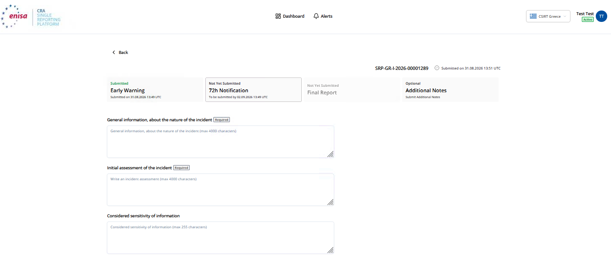
The 72h tab, top, for a severe incident — from the manual, the first published capture of this form. The stage header shows the due date: “To be submitted by …”. 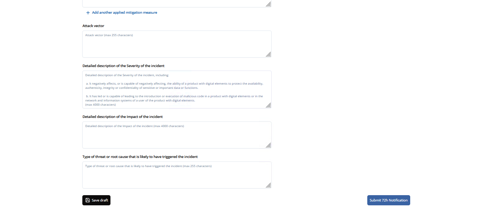
The same tab further down. The Final Report’s description fields are already here, optional; “Save draft” and “Submit 72h Notification” close the form. Everything from the Early Warning is carried over and can be corrected. These are the ones that stop being optional.
Field on this screen Status What goes in it Considered sensitivity of information20 If available Free text, not a confidentiality label: name the sensitive element and what premature disclosure would cause. Corrective or mitigating measures taken21 Required What you have already done — containment, configuration changes, withdrawal, credential rotation, monitoring. Max. 2,000 characters. Corrective or mitigating measures that user can take22 Required What users should do themselves, with the version that fixes it. General informationv26 Required Vulnerability only: the vulnerability and its exploitation. General information about nature of incidenti36 Required Incident only. Initial assessment of the incidenti43 Required Incident only: severity, scope, affected functions or data. Separate what is confirmed from what is still under investigation. Seen on the form, stated nowhere else. The three measures fields — taken, users can take, applied and ongoing — are repeatable: “+ Add another…” adds a further entry rather than making you list several in one box. Narrative fields cap at 4,000 characters; Considered sensitivity of information, Attack vector and Type of threat or root cause at 255. The two date-and-time fields are entered as date, hour and minute in separate controls, in UTC.
From practice. File on time; the 72 hours are a deadline, not a target, and what is not yet confirmed can go in as an estimate — marked as one. The 72-hour notification stays editable until the Final Report is submitted, so a corrected figure is an update, not a failure. The field that is hard in practice is measures users can take. Three honest situations, none of which allows leaving it blank: the product is out of support or is a legacy product placed on the market before 11 December 2027, so no remedy is owed — say exactly that; the product runs in different operating environments and the advice differs — give it per environment; nothing can be recommended yet — say so, and what users should do meanwhile.
-
3
Only for a vulnerability: flag PEC
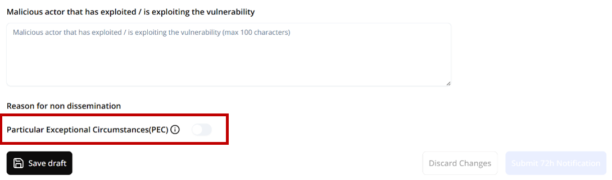
Scroll to Reason for non dissemination and toggle the indicator. ENISA published a dedicated guidance page for this on 8 September 2026, and it narrows the scope: PEC applies only to the 72-hour notification of an actively exploited vulnerability. Not to incidents, not to the Early Warning, not to the Final Report.
Field on this screen Status What goes in it Malicious actor that has exploited / is exploiting the vulnerabilityv31 If available Visible just above the toggle. Both the screen and the glossary state the limit: max. 100 characters. Particular Exceptional Circumstances (PEC)v32 Optional A toggle, off by default. Turning it on reveals the reasons below. From practice. PEC is not a decision the manufacturer takes alone. Before the toggle goes on, the assessment should already have been agreed with your CDaC — by phone, before the 72-hour notification is filed — so that what arrives is a request the CSIRT is expecting, not a surprise it has to rule on under time pressure. If that conversation has not happened, do not toggle it.
-
4
Choose the ground, and say why
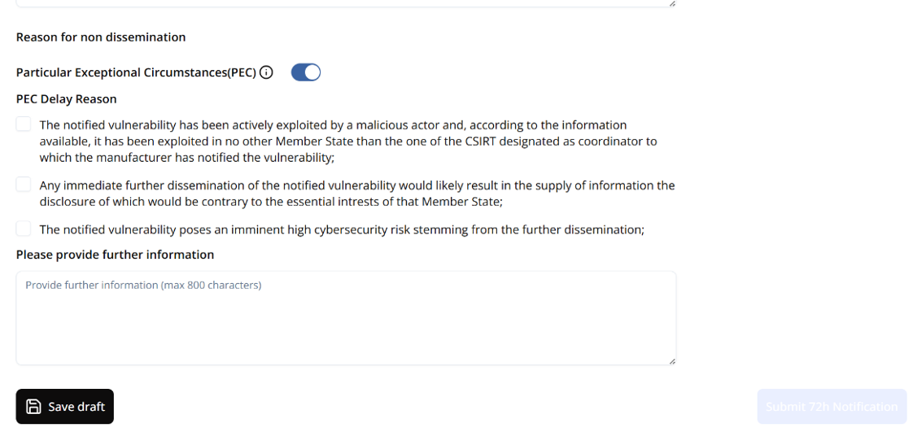
The three grounds of the third subparagraph of Art. 16(2) CRA, as checkboxes. Invoking PEC sets the dissemination status to “72h Submitted under PEC”. ENISA then receives only limited information under Art. 16(2); the CDaC decides whether to disseminate, and shares the full notification manually.
Field on this screen Status What goes in it PEC Delay Reasonv33 Optional Three checkboxes, one per legal ground: exploitation confined to the CDaC’s own Member State; dissemination contrary to that Member State’s essential interests; imminent high cybersecurity risk from dissemination. Please provide further informationv34 Optional Justification for the CDaC. The screen states max. 800 characters — a limit that appears nowhere in the glossary. Three ENISA spellings, one field. The guidance page writes “PEC Delay Reson” in its text while the screenshot shows “Reason”; the platform labels the toggle “Particular Exceptional Circumstances(PEC)” without a space; the FAQ calls the concept “particularly exceptional circumstances”. The second checkbox reads “essential intrests” on screen. All reproduced as found.
From practice. The justification in the 800-character box is the one agreed with the CDaC, in the words agreed. Its job is to let the CSIRT confirm what has already been discussed, not to persuade it: which of the three grounds, the facts that carry it, and how long the delay is needed for. Anything the CDaC has not heard before belongs in the call, not in this field.
Screenshots: ENISA, CRA SRP guidance — AR Notification submission and update, retrieved 7 September 2026. Reproduced with acknowledgement per the ENISA Legal Notice. Additional screenshots from ENISA’s CRA SRP – AR User Manual (PDF, Version 1.1), retrieved 10 September 2026. Field meanings from the SRP Glossary. PEC screens: ENISA, CRA SRP guidance — Particular Exceptional Circumstances (PEC), retrieved 8 September 2026 — the page appeared that day. Reproduced with acknowledgement per the ENISA Legal Notice.
The legal basis, and one thing ENISA has not settled. Withholding rests on the third subparagraph of Art. 16(2) CRA, with the conditions further specified by Delegated Regulation (EU) C(2025) 8407 of 11 December 2025. Whether you may invoke one ground or several is genuinely unclear: the glossary’s description of the field says “one of the three” and its completion instruction says “at least one of the three”. The form shows checkboxes, which suggests several; the guide does not resolve what ENISA has not.
Final Report
The closing report: a full description with severity and impact, and details of the corrective measure. For vulnerabilities, no later than 14 days after a corrective or mitigating measure is available; for severe incidents, within one month after the 72h notification. Once submitted, the notification is closed.
The last fields to become mandatory. The two description pairs are the substance of the report — severity and impact are separate fields, not a duplicate.
| Field | Status | Note |
|---|---|---|
| Both notification types | ||
| Corrective or mitigating measures taken21 | Required | Carried over from the 72-hour notification and updated with what has happened since. |
| Corrective or mitigating measures users can take22 | Required | Same field, updated. |
| Vulnerability only | ||
| Date when corrective or mitigating measure has been availablev27 | Required | The date a corrective or mitigating measure became available — this is what the 14-day deadline runs from. |
| Full description of the severity of the vulnerabilityv28 | Required | Max. 4,000 characters. ENISA calls the incident equivalent “Detailed description of the Severity”. |
| Full description of the impact of the vulnerabilityv29 | Required | Separate field from the severity description above. |
| Malicious actor that has exploited/is exploiting the vulnerabilityv31 | If available | Mandatory if you know it; do not speculate about attribution. |
| Incident only | ||
| Applied or ongoing mitigation measuresi37 | Required | Measures applied and still running. The FAQ writes “applied and ongoing”, the glossary “applied or ongoing”. |
| Detailed description of the Severity of the incidenti38 | Required | Max. 4,000 characters. |
| Detailed description of the Impact of the incidenti39 | Required | A second, separate description field — impact, not severity. |
| Type of Threat or root cause likely to have triggered incidenti40 | Required | The type of threat or root cause likely to have triggered the incident. |
- 1Complete the remaining fields and submit within 14 days after a corrective or mitigating measure becomes available (vulnerability) or one month after submitting the 72h notification (incident).
- 2Additional notes serve as an exchange channel with the national CSIRT.
- 3Closing. Once the Final Report is submitted, the notification is closed; subsequent changes are no longer possible (confirmation dialog “Are you sure?”).
-
1
Reopen it one last time

The same record again, now on the Final Report tab. Once this is submitted the notification closes and nothing further can be changed — the platform asks “Are you sure?” first.
From practice. For a vulnerability, the 14 days between the corrective measure becoming available and the Final Report are not slack — they are the window for informing users under Article 14(8). Use them for that, unless something obvious stands in the way. Once every required piece of information is in hand, file; holding a finished report gains nothing, and after the deadline it is late.
-
2
The closing fields
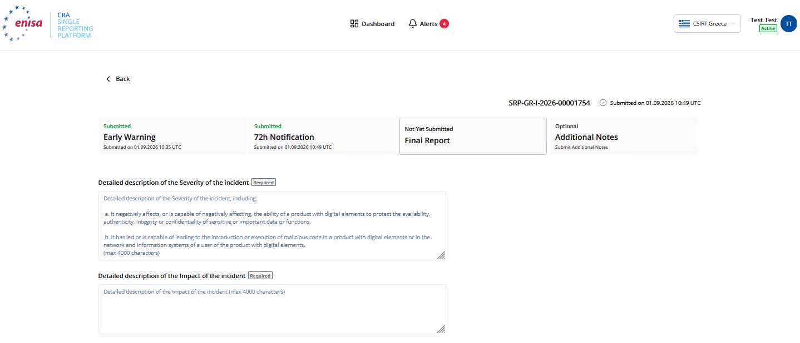
The Final Report tab for a severe incident, from the manual. The severity description’s placeholder quotes the Article 14 criteria back at you. 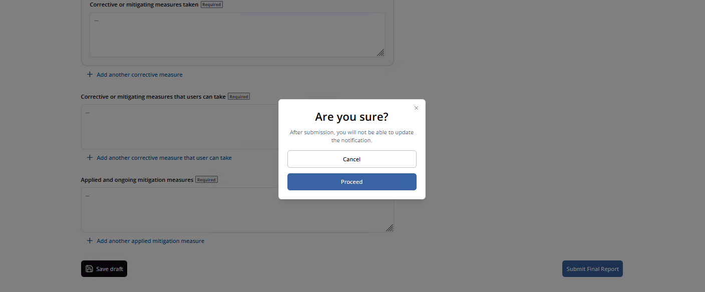
“Submit Final Report” asks once more. This is the last edit you get. The substance of the report. The two description pairs are separate fields, not a duplicate. On this tab the measures fields that were optional at 72 h — taken, users can take, applied and ongoing — carry the “Required” badge for an incident.
Field on this screen Status What goes in it Date when corrective or mitigating measure has been availablev27 Required Vulnerability only — and the date the 14-day deadline runs from. Full description of the severity of the vulnerabilityv28 Required Max. 4,000 characters. ENISA calls the incident equivalent “Detailed description of the Severity”. Full description of the impact of the vulnerabilityv29 Required A separate field from the severity description. Malicious actor that has exploited / is exploiting the vulnerabilityv31 If available Mandatory if known. Do not speculate about attribution. Applied and ongoing mitigation measuresi37 Required Incident only. The FAQ writes “applied and ongoing”, the glossary “applied or ongoing”. Detailed description of the Severity of the incidenti38 Required Incident only. Max. 4,000 characters. Detailed description of the Impact of the incidenti39 Required Incident only. Separate from severity. Type of threat or root cause that is likely to have triggered the incidenti40 Required Incident only. After “Proceed” the notification is read-only for you. The manual is explicit: after the Final Report is submitted, the notification is no longer editable by the AR. Anything still wrong has to go through the CSIRT. Until then, every earlier stage can still be corrected with “Update”, and each update alerts the CDaC and whoever already has access.
From practice. At this stage the measures fields become mandatory, and “none” is a valid answer only if it is written out: no corrective measure, no user measure, and why — end of support, a legacy product placed on the market before 11 December 2027, or a mitigation that removes the need. What is not acceptable is a placeholder to get past the badge. Read the confirmation dialog literally: after Proceed nothing here can be changed by you.
Screenshots: ENISA, CRA SRP guidance — AR Notification submission and update, retrieved 7 September 2026. Reproduced with acknowledgement per the ENISA Legal Notice. Additional screenshots from ENISA’s CRA SRP – AR User Manual (PDF, Version 1.1), retrieved 10 September 2026. Field meanings from the SRP Glossary.
Accounts and roles
Registration creates one account, but a manufacturer normally needs several people able to report — and needs them to stay able to report when someone leaves. The platform handles this with two roles and a set of self-service functions, all under Settings. None of this requires the CSIRT.
Two numbers worth knowing. There can be exactly one Primary AR per manufacturer and up to 20 Secondary ARs. Separately, a non-validated AR may submit up to 20 notifications for one manufacturer before validation becomes mandatory — so a pending validation never blocks a deadline.
| Function | Primary AR | Secondary AR |
|---|---|---|
| See notifications submitted by other ARs of the manufacturer | Yes | No |
| Submit notifications | Yes | Yes |
| Manage the manufacturer entity | Yes | No |
| Invite a Secondary AR | Yes | No |
| Remove a Secondary AR’s association | Yes | No |
| Remove own association | Yes | Yes |
| Claim the Primary role | n/a | By request |
| Associate with a further manufacturer | Yes | Yes |
-
1
Invite a Secondary AR

“Invite Backup AR” in Settings — an email address and “Send Invitation”. Primary AR only, and only once your own association shows Verified — the manual and the guidance page agree on that since 9 September. The invitee receives the invitation and completes registration with the manufacturer details pre-filled; someone who already has an SRP account uses the same link to add the association — see Registration, step 5.

Confirmation. The new representative appears under Representatives as “Pending”, Backup AR. Until they accept, the record holds only their email address and the manufacturer, with no role assigned. The link expires after seven days.
From practice. The button appears only once your own association is Verified — if it is missing, that is why. Invite at least one Secondary early, for access alone; but a Secondary is a fallback reporter, not a collaborator — they will not see your notifications or drafts.
-
2
Claim the Primary role

“Claim Primary AR Role”, offered to a Secondary AR on the manufacturer record. 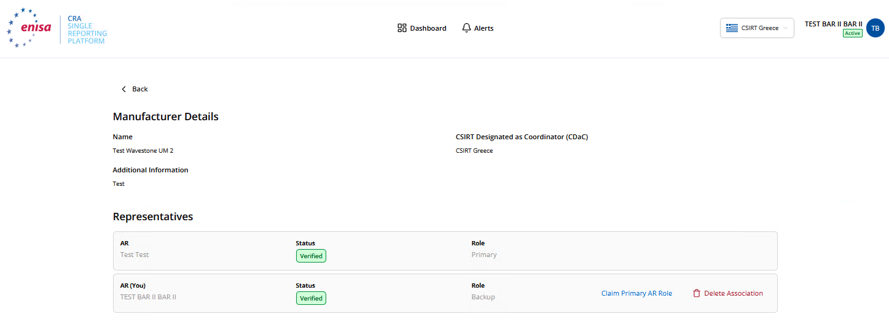
From the manual, with both associations Verified: the Backup AR’s row carries both actions. The claim goes to the CSIRT for approval; you stay Secondary until it is granted. This is the succession path. Without it, an account nobody controls would keep hold of the manufacturer entity when the Primary AR leaves — so agree in advance who claims it.
From practice. Hand over while the outgoing Primary is still in the company and reachable: the claim goes to the CSIRT for approval, and whether that involves questions back to the manufacturer is not yet known from experience. Do not let a departure and a claim coincide.
-
3
Remove an association

“Remove Association” on the guidance page’s screenshot; the button now reads “Delete Association”. The Primary can remove a Secondary’s or their own; a Secondary only their own. Available only while the association is Verified. Use this when someone leaves, rather than abandoning the account. Removing the last association leaves the manufacturer without a representative, so hand the Primary role over first.
From practice. Only after the new Primary has been approved — never before. A manufacturer whose last Primary deletes their association has nobody left who can see all of its notifications.
-
4
Add another manufacturer

Settings → Association Management → Add Manufacturer, with each association’s status and role. One account can represent several manufacturers. Each new association is verified separately by the CSIRT of that manufacturer’s Member State, and starts out “Unverified” — with the same 20-notification allowance while it is. The form ends with “Save”, and the SRP confirms the request by e-mail.
From practice. One association per legal entity that places products on the market, each verified by the CSIRT of that entity’s own Member State. The person is the same; the coordinator can differ.
-
5
Check your details

Personal Details — the same four fields as registration. 
“Show Details” opens the manufacturer record, editable through the registration form. Worth doing before a deadline rather than during one: this is where you confirm the manufacturer is verified and the CDaC is the one you expect.
From practice. Worth a glance before an incident rather than during one: is the association Verified, is the CDaC the one you meant, is the account still Active.
-
6
Watch the dashboard and the alerts

The Dashboard, with a tab and a count for each state, and search by ID, title or manufacturer. 
The Alerts tab: deadlines approaching, and notifications invalidated by a CSIRT. Every submission is confirmed twice — by email and by an alert — to you and to all other ARs of that manufacturer. An invalidated notification shows up here, not in your inbox alone.
What the manual adds about the Dashboard. A Primary AR sees every notification of the manufacturer; a Secondary AR sees only the notifications they submitted and the drafts they created, not a colleague’s. Search works on notification ID, manufacturer or title; the filters are Member State and type of submission, plus “Action Required” for anything carrying a label — “Report is late”, “Report due soon”. The default sort is last update, newest first. In the Alerts tab, light blue is unread, grey is read, and red is reserved for critical events such as a CSIRT invalidating a submission.
From practice. Only the Primary AR sees everything the manufacturer has filed; a Secondary sees their own notifications and nothing else. Whoever needs the overview — for management, for a CSIRT enquiry, for the next audit — has to be the Primary, or has to ask them.
Drafts are private. A saved draft is visible only to the AR who created it — not to the other ARs of the same manufacturer. Plan for that: a draft left behind by an absent colleague cannot be picked up by someone else. The AR Note on a submitted notification works the same way: the other ARs can read it, but only its author can write to it. And the Dashboard follows the same line for a Secondary AR: they see the notifications they submitted, not those of the other ARs — only the Primary sees the manufacturer’s whole list.
Screenshots: ENISA, CRA SRP guidance — AR Interface functions, retrieved 7 September 2026. Reproduced with acknowledgement per the ENISA Legal Notice. Additional screenshots from ENISA’s CRA SRP – AR User Manual (PDF, Version 1.1), retrieved 10 September 2026.
Every field, explained
The phase tables above show what each stage requires. This is the whole form: all 38 fields ENISA itemises, with what each one means, how ENISA says to complete it, its worked example and its expected format. Read it as cards, one field at a time, or switch to the full table below. The source is ENISA’s CRA SRP Glossary, retrieved 7 September 2026; the meanings, instructions and examples are quoted from it.
Two numbering systems, both ENISA’s. The FAQ counts 43 fields, the Glossary itemises 38. Nothing is missing from either: the FAQ additionally lists five fields the platform fills in by itself (notification level, three reporting timestamps, and the reporter), which the Glossary does not describe because you never type them. This page uses the FAQ number as the field’s label and names the Glossary number inside each entry, so a field stays findable in both.
The four statuses. Each field carries one per stage:
- Required must be filled in before the notification can be submitted at that stage.
- If available ENISA’s “required if such information available”: mandatory once you have the information, and not a reason to delay.
- Carried over ENISA’s “by default copied from previous step, or updated”. The value you gave earlier is already there and can be corrected. This is why the same field reappears in a later stage.
- Optional and n/a, which means the field does not exist at that stage at all.
Read the examples as examples. On 7 September 2026 ENISA rewrote 29 of the 38 completion instructions from an instruction into an illustration — “Enter a short, specific title…” became “For example, enter a short, specific title…”. Nothing else in those sentences changed. They are quoted below as they now stand, so what looks like hedging is ENISA’s wording, not ours. Where the glossary contradicts itself, this page says so in the field rather than quietly smoothing it over.
Apply to both an actively exploited vulnerability and a severe incident.
1Notification type (Vulnerability/Incident)EWRequired72 hCarried overFRCarried over+
FormatSelect one: Vulnerability or Incident
- What it means
- Indicates whether the notification concerns an actively exploited vulnerability (AEV) or a severe incident (SI) having an impact on the security of a product with digital elements.
- How to complete it
- Select Actively Exploited Vulnerability when reporting an AEV. Select Severe Incident when reporting a SI having an impact on the security of a product with digital elements.
Vulnerability
Glossary 1 · applies to Both
7TitleEWRequired72 hCarried overFRCarried over+
FormatPlain text; concise title
- What it means
- Short human-readable name for the notification.
- How to complete it
- For example, enter a short, specific title that allows users to recognise the affected product and the reported issue. Do not include confidential technical detail that is unnecessary for identification (max. 255 characters).
Active exploitation affecting Product X version 4.2.
Glossary 2 · applies to Both
8SummaryEWRequired72 hCarried overFRCarried over+
FormatShort paragraph
- What it means
- Concise overview of the facts, affected product, and issue being notified.
- How to complete it
- For example, provide a concise overview of what happened, the affected product or version, the known impact, and the current mitigation status. Use factual information available at the reporting stage (max. 4000 characters).
An actively exploited vulnerability affects Product X 4.2. A temporary workaround is available, and a security update is being prepared.
Glossary 3 · applies to Both
9Manufacturer nameEWRequired72 hCarried overFRCarried over+
FormatSystem-generated / read-only
- What it means
- Name of the natural or legal person who develops or manufactures the product with digital elements or has the product with digital elements designed, developed or manufactured, and markets it under its name or trademark, whether for payment, monetisation or free of charge.
- How to complete it
- No user action is required. The platform creates or updates this value automatically based on what you wrote when you registered to the Platform or added at a later stage. You may review it only to confirm that the displayed information is consistent with the notification history.
Automatically populated by the platform during the notification submission or free text during manufacturer registration [Name of the company].
Glossary 4 · applies to Both
10Member States where product available (Concerned CSIRT)EWIf available72 hCarried overFRCarried over+
FormatSelect one or more Member States
- What it means
- Member States in which territory the manufacturer is aware that the affected product has been made available; used to determine concerned CSIRTs.
- How to complete it
- The Platform will automatically show you CDaC, however, you may select other Member States (MS) where the affected product has been made available, based on the information currently known to the manufacturer. Update the selection if new distribution information becomes available.
Belgium as your CDaC, automatically populated by the platform and you may add Greece and Italy and MS where the affected product has been made available
Glossary 5 · applies to Both
11Product NameEWRequired72 hCarried overFRCarried over+
FormatOfficial product name
- What it means
- Name that identifies the affected product with digital elements.
- How to complete it
- For example, enter the official commercial or technical name of the affected product with digital elements. Use the same name that appears in product technical documentation or market information (max. 255 characters).
Product X
Glossary 6 · applies to Both
12Product versionEWRequired72 hCarried overFRCarried over+
FormatVersion or version range
- What it means
- Version, release, build, model, or other revision information required to identify the affected product instance.
- How to complete it
- For example, enter every affected version, release, build, model, or firmware revision. Use exact identifiers and clearly state a range when multiple versions are affected (max. 255 characters).
4.0 to 4.2.1
Glossary 7 · applies to Both
13Product Type (Default/Important/Critical)EWOptional72 hCarried overFRCarried over+
FormatSelect one: Default, Important, Critical
- What it means
- Regulatory category indicating whether the product is default, important, or critical under the CRA classification framework.
- How to complete it
- For example, select the CRA regulatory type applicable to the product. Choose Important or Critical only where the product falls within the relevant CRA category (Annexes III and IV); otherwise select Default.
Important
Glossary 8 · applies to Both
14Product ClassEWOptional72 hCarried overFRCarried over+
FormatSelect one configured class
- What it means
- For an important product, the applicable Class I or Class II category used for conformity-assessment treatment.
- How to complete it
- For example, for an important product, select the applicable CRA class. Leave the field empty when the product is not classified as an important product or when no class applies.
Class II
Glossary 9 · applies to Both
15Product CategoryEWOptional72 hCarried overFRCarried over+
FormatSelect one configured category
- What it means
- The applicable CRA product category, normally selected from the relevant category list in CRA Annexes III or IV.
- How to complete it
- You may select the category that best matches the affected product under the applicable CRA category list. Use the product’s core functionality, not only its commercial name.
Choose between: Hardware devices with Security Boxes; Smart meter gateways within smart metering systems and other devices for advanced security purposes, including secure cryptoprocessing devices; or Smartcards or similar devices, including secure elements.
Glossary 10 · applies to Both
16End of support indicatorEWOptional72 hCarried overFRCarried over+
FormatSelect one: Yes or No
- What it means
- Indicates whether the product with digital elements has a user interface or similar technical means allowing direct interaction with its users and the manufacturer should make use of such features to inform users that their product with digital elements has reached the end of the support period.
- How to complete it
- You may select one: Yes when the product with digital elements has reached the end of the support period or No when is doesn’t.
Yes
ENISA’s own text contradicts itself here. The meaning above describes the CRA duty to inform users that support has ended — whether the product has a user interface for doing so. The completion instruction, the format and the example all ask something else: has the support period ended, Yes or No. The workable reading is the Yes/No one; it is the only one the field can hold. (ENISA also writes “or No when is doesn’t”.) Reported unchanged through two editing passes of the glossary.
Glossary 11 · applies to Both
17Component nameEWOptional72 hCarried overFRCarried over+
FormatComponent name and optional version
- What it means
- Name of the software or hardware component in which the vulnerability or incident is located or observed.
- How to complete it
- For example, enter the name of the affected hardware or software component. You may include the component version when known. Leave empty if the issue cannot be attributed to a component (max. 255 characters).
Authentication module 3.1
Glossary 12 · applies to Both
18Mitigating measure expected shortlyEWOptional72 hCarried overFRCarried over+
FormatSelect one: Yes, No, Unknown
- What it means
- Indicates whether an effective risk-mitigation measure, such as a security update or user guidance, is expected to become available.
- How to complete it
- For example, select Yes only when an effective security update, workaround, or user guidance is expected shortly and the expectation is supported by the remediation plan. Otherwise select No or Unknown.
Yes
Glossary 13 · applies to Both
19User Action able to reduce impactEWOptional72 hCarried overFRCarried over+
FormatAction-oriented text
- What it means
- Action that product users can take to prevent, reduce, or contain the impact of the vulnerability or incident.
- How to complete it
- You may describe the immediate action a user can take to reduce the likelihood or impact of exploitation or the incident. Provide clear, practical instructions and identify any limitation or prerequisite (max. 4000 characters).
Disable the affected interface until the security update is installed.
Glossary 14 · applies to Both
20Considered sensitivity of informationEWOptional72 hIf availableFRCarried over+
FormatConcise justification
- What it means
- Manufacturer's assessment of how sensitive the notified information is, to inform secure handling and dissemination decisions.
- How to complete it
- You may describe why any submitted information requires restricted handling. Identify the sensitive element and the potential consequence of premature or wider disclosure. Do not use a generic confidentiality statement (max. 255 characters).
The technical details reveal an unpatched exploitation path that is not yet publicly known.
Glossary 15 · applies to Both
21Corrective or mitigating measures takenEWOptional72 hRequiredFRRequired+
FormatBulleted list or structured text
- What it means
- Actions already implemented by the manufacturer or other responsible party to correct the issue or reduce its risk or impact.
- How to complete it
- For example, list the actions already taken to correct the issue or to reduce the risk. You may include containment, configuration changes, update withdrawal, credential rotation, monitoring, or other completed measures, with dates where useful. (max. 2000 characters).
Disabled the affected service; revoked exposed credentials; increased monitoring.
From practice. “None yet” is an answer only when it is written out with the reason — no fix available, and what mitigates meanwhile. Never a placeholder to get past the badge.
Glossary 16 · applies to Both
22Corrective or mitigating measures users can takeEWOptional72 hRequiredFRRequired+
FormatAction-oriented text
- What it means
- Instructions or actions users can apply to reduce exposure or impact, including workarounds, configuration changes, patches, or isolation measures.
- How to complete it
- For example, provide step-oriented guidance that users can apply. Prioritise the effective fix, then state temporary workarounds and any operational impact. Clearly identify actions that are no longer recommended (max. 4000 characters).
Install version 4.2.2. Until installation, restrict management-interface access to trusted networks.
The FAQ writes this field “Corrective or mitigating measures that users can take”; the glossary and the current FAQ table say “user”. Same field.
From practice. The hard one in practice. Out of support, or a legacy product placed on the market before 11 December 2027, means no remedy is owed — say exactly that. Advice that differs by operating environment is given per environment. Nothing recommendable yet — say so, and what users should do meanwhile. Blank is not an option.
Glossary 17 · applies to Both
23Attack vectorEWOptional72 hOptionalFROptional+
FormatShort, structured description or configured classification
- What it means
- Description or structured classification of the path or means by which exploitation or compromise can occur.
- How to complete it
- For example, describe how the vulnerability may be exploited or how the incident reached the affected product. State the relevant interface, access path, protocol, or user interaction. Avoid unsupported assumptions (max. 255 characters).
Remote network access through an exposed API.
Glossary 18 · applies to Both
Shown only when the notification type is Vulnerability.
v24CVE IDEWOptional72 hCarried overFRCarried over+
FormatCVE identifier
- What it means
- CVE Identifier (CVE ID) assigned to the publicly disclosed vulnerability under the Common Vulnerabilities and Exposures (CVE) Program.
- How to complete it
- You may enter the official CVE ID only if one has been assigned by the competent CNA. Copy the ID exactly as published. Leave the field empty if no ID exists (max. 255 characters).
CVE-2026-12345
Glossary v19 · applies to AEV
v25EUVD IDEWOptional72 hCarried overFRCarried over+
FormatEUVD identifier
- What it means
- Identifier of the vulnerability record in the European Vulnerability Database (EUVD).
- How to complete it
- You may enter the official EUVD ID if one has been assigned by ENISA. Copy the ID exactly as published. Leave the field empty if no ID exists (max. 255 characters).
EUVD-2026-12345
Glossary v20 · applies to AEV
v26General informationEWOptional72 hRequiredFRCarried over+
FormatStructured narrative
- What it means
- High-level description of the vulnerability and, where known, how exploitation works, without requiring the full final technical analysis.
- How to complete it
- For example, describe the vulnerability at a high level and explain how the known exploit operates. Include the affected function, required access, and observed exploitation behaviour. Do not include unverified attribution (max. 4000 characters).
An authentication bypass in the management interface allows a remote actor with network access to execute privileged actions.
Glossary v21 · applies to AEV
v27Date when corrective or mitigating measure has been availableEWOptional72 hOptionalFRRequired+
FormatDate and time
- What it means
- Date and time when the mitigating measure has been available.
- How to complete it
- For example, enter the date and time when the mitigating measure has been available.
2026-09-02 09:15 UTC
Glossary v22 · applies to AEV
v28Full description of the severity of the vulnerabilityEWOptional72 hOptionalFRRequired+
FormatDetailed structured narrative
- What it means
- Complete description of the vulnerability, including at least its severity.
- How to complete it
- For example, provide the completed technical description of the vulnerability. Including the assessed severity rating, classification, rationale for the assessment and other relevant factors or criteria supporting the assigned severity level (max. 4000 characters).
Authentication validation is missing in endpoint X... Severity: High... Affected versions: 4.0–4.2.1...
The FAQ calls the AEV pair “Full description of the severity / impact” and the SI pair “Detailed description of the Severity / Impact”. Same kind of field, two names — both spellings are given here so you recognise them in the portal.
Glossary v23 · applies to AEV
v29Full description of the impact of the vulnerabilityEWOptional72 hOptionalFRRequired+
FormatDetailed structured narrative
- What it means
- Complete description of the vulnerability, including at least its impact.
- How to complete it
- For example, provide the completed technical description of the vulnerability. Including the potential or actual impact of the vulnerability, the affected systems, components, data, users or services, as applicable (max. 4000 characters).
Authentication validation is missing in endpoint X... Impact: High... Affected versions: 4.0–4.2.1...
Glossary v24 · applies to AEV
v30Date/time when you become aware of the Actively Exploited Vulnerability [1]EWRequired72 hCarried overFRCarried over+
FormatDate and time
- What it means
- Date and time when the manufacturer or another relevant party first detected the vulnerability.
- How to complete it
- For example, enter the date and time when the vulnerability was first detected. If the exact time is unknown, enter the best supported estimate and identify it as estimated in the vulnerability description.
2026-08-24 09:15 UTC
ENISA footnote [1]: “This field will be available in the next release of the Platform.”
From practice. The legal clock runs from this moment, not from the draft and not from the submission. An estimate is allowed and must be marked as one, in the description.
Glossary v25 · applies to AEV
v31Malicious actor that has exploited/is exploiting the vulnerabilityEWOptional72 hOptionalFRIf available+
FormatFree text
- What it means
- Available information about the actor that exploited or is exploiting the vulnerability, without requiring attribution where information is unavailable.
- How to complete it
- You may enter confirmed information about the malicious actor or observed activity. If attribution is unconfirmed, describe the observed indicators and state that attribution is unknown (max. 100 characters)..
Unknown actor; observed infrastructure includes the indicators listed in Reference REF-2026-18.
Glossary v26 · applies to AEV
v32Particular Exceptional Circumstances (PEC)EWn/a72 hOptionalFRn/a+
FormatSelect applicable PEC option(s)
- What it means
- Selection indicating that one or more legally specified circumstances in the third subparagraph of Article 16 (2) of CRA justify withholding the full 72-hour AEV notification from simultaneous access by ENISA and/or delaying wider dissemination.
- How to complete it
- You may select the applicable exceptional circumstance only when the corresponding legal condition is met.
Only reachable in the 72-hour notification — not at the Early Warning, not in the Final Report.
Glossary v27 · applies to AEV
v33PEC Delay ReasonEWn/a72 hOptionalFRn/a+
FormatSelect applicable check box
- What it means
- You may select one of the three of the legally specified circumstances justifying withholding the full 72-hour AEV notification from simultaneous access by ENISA and/or delaying wider dissemination.
- How to complete it
- Support the selection with specific facts in PEC Delay Reason and indicate the requested dissemination delay. You may select at least one of the three options.
You may choose: the notified vulnerability has been actively exploited by a malicious actor and, according to the information available, it has been exploited in no other Member State than the one of the CSIRT designated as coordinator to which the manufacturer has notified the vulnerability; or<br>N/A<br>that any immediate further dissemination of the notified vulnerability would likely result in the supply of information the disclosure of which would be contrary to the essential interests of that Member State; or
Inconsistent since 7 September 2026. The meaning says “one of the three” while the completion instruction says “at least one of the three”. The three grounds themselves are those of the third subparagraph of Art. 16(2) CRA and have not changed.
Glossary v28 · applies to AEV
v34Please provide further informationEWOptional72 hOptionalFRCarried over+
FormatFree text
- What it means
- Description of anything that should be helpful for CSIRT Designated as Coordinator (CDaC)taking their decision.
- How to complete it
- You may provide additional information(s).
We consider it very important for national security.
Glossary v29 · applies to AEV
Shown only when the notification type is Incident.
i35Incident is suspected of unlawful or malicious actsEWRequired72 hCarried overFRCarried over+
FormatSelect one: Yes, No, Unknown
- What it means
- Boolean indication of whether available evidence suggests the incident resulted from unlawful or malicious activity.
- How to complete it
- For example, select Yes when available evidence indicates intentional unlawful or malicious activity. Select No when the event is assessed as non-malicious. Select Unknown while the cause remains unresolved.
Yes
Glossary i30 · applies to SI
i36General information about nature of incidentEWOptional72 hRequiredFRCarried over+
FormatStructured narrative
- What it means
- High-level account of what happened, how the incident manifested, and the affected security properties or functions.
- How to complete it
- For example, describe what occurred, the affected product functions or security properties, and the currently known scope. Focus on confirmed facts available at the 72-hour stage (max. 4000 characters).
Malicious code executed through the update service and affected the integrity of locally stored configuration data.
Glossary i31 · applies to SI
i37Applied or ongoing mitigation measuresEWOptional72 hOptionalFRRequired+
FormatStructured narrative
- What it means
- Actions that have been taken by the manufacturer or other responsible party or are still ongoing to correct the issue or reduce its risk or impact.
- How to complete it
- For example, list the actions already applied or ongoing to correct the issue or reduce risk. Include containment, configuration changes, update withdrawal, credential rotation, monitoring, or other completed measures, with dates where useful (max. 4000 characters).
Disabled the affected service; revoked exposed credentials; increased monitoring.
The FAQ writes “Applied and ongoing mitigation measures”, the glossary “Applied or ongoing”. Not a pure style difference; the FAQ wording is the wider one.
From practice. Mandatory at the Final Report. If nothing is applied and nothing is ongoing, that sentence is the content — with the reason.
Glossary i32 · applies to SI
i38Detailed description of the Severity of the incidentEWOptional72 hOptionalFRRequired+
FormatStructured narrative
- What it means
- Complete the detailed description of the severity of the incident.
- How to complete it
- For example, provide the completed description of the severity of the incident. Include the sequence of events, affected products and functions, severity, scope, evidence, root cause, response measures, and recovery status (max. 4000 characters).
Low – limited impact, no significant disruption to operation.
Two separate description fields, not a duplicate: this one is severity, the next one is impact. Both up to 4,000 characters, both required in the Final Report.
Glossary i33 · applies to SI
i39Detailed description of the Impact of the incidentEWOptional72 hOptionalFRRequired+
FormatStructured narrative
- What it means
- Complete the detailed description of the impact of the incident.
- How to complete it
- For example, provide the completed description of the impact of the incident, including the impact on the product, data, functions, users, or connected systems (max. 4000 characters).
Minimal – no material impact of operations, users or data.
Glossary i34 · applies to SI
i40Type of Threat or root cause likely to have triggered incidentEWOptional72 hOptionalFRRequired+
FormatClassification plus short explanation
- What it means
- Most likely threat category, initiating event, weakness, failure, or root cause that triggered the incident.
- How to complete it
- For example, state the most likely threat type and root cause supported by the investigation. Explain the evidence briefly and mark the conclusion as preliminary when analysis is incomplete (max. 255 characters).
Supply-chain compromise caused by an unauthorised modification to the update package.
Glossary i35 · applies to SI
i41Date/time when you become aware of the incident [2]EWRequired72 hCarried overFRCarried over+
FormatDate and time
- What it means
- Date and time when the manufacturer or another relevant become aware of the incident.
- How to complete it
- For example, enter the date and time you become aware of the incident. If the exact time is unknown, enter the best supported estimate and identify it as estimated in the incident description.
2026-08-24 09:15 UTC
ENISA footnote [2]: “In the current release this field is named: ‘Date/time the incident was detected’.”
Required. This is the field the deadlines run from. If the exact time is unknown, enter your best supported estimate and say in the description that it is an estimate.
From practice. The legal clock runs from this moment, not from the draft and not from the submission. An estimate is allowed and must be marked as one, in the description.
Glossary i36 · applies to SI
i42Date/time incident occurredEWOptional72 hOptionalFROptional+
FormatDate and time
- What it means
- Known or estimated date and time when the incident began or took place.
- How to complete it
- For example, enter the date and time when the incident was began or occurred. If the exact time is unknown, enter the best supported estimate and identify it as estimated in the incident description.
2026-08-24 09:15 UTC
Optional — and a different field from the one above. “When you became aware” is mandatory, “when the incident occurred” is not.
Glossary i37 · applies to SI
i43Initial assessment of the incidentEWOptional72 hRequiredFRCarried over+
FormatStructured narrative
- What it means
- Preliminary analysis of the incident's severity, scope, likely impact, affected functions or data, and immediate implications.
- How to complete it
- For example, provide the preliminary assessment of severity, scope, affected security properties, products or users, and likely impact. Clearly distinguish confirmed findings from matters still under investigation (max. 4000 characters).
Confirmed impact is limited to integrity of configuration data on three product instances; broader exposure remains under investigation.
Glossary i38 · applies to SI
Field meanings, completion instructions, examples and formats: ENISA, CRA SRP Glossary, version 1.1, retrieved 7 September 2026. Reproduced with acknowledgement per the ENISA Legal Notice. Field numbers follow ENISA’s SRP FAQ, question 16.
Questions & answers
ENISA’s official Single Reporting Platform FAQ, reproduced in full — all 29 questions as they stood on 7 September 2026. Wording is ENISA’s. Read it at the source.
Q1What is the Cyber Resilience Act’s Single Reporting Platform (CRA SRP)?+
The CRA Single Reporting Platform (SRP) is an online tool for manufacturers and open-source software stewards to meet their obligation to report actively exploited vulnerabilities and severe incidents having an impact on the security of products with digital elements under the Cyber Resilience Act (CRA). Designed to simplify EU reporting obligations, the SRP enables manufacturers and open-source software stewards to report only once, rather than having to notify multiple national authorities individually. The platform incorporates security measures to protect confidentiality.
Manufacturers and open-source software stewards submit notifications electronically through the SRP and select the relevant CSIRT designated as coordinator. In general, the national CSIRT to which the notification should be submitted is primarily determined by the manufacturer’s main location of establishment, in accordance with Art. 14(7) of the CRA.
Once submitted, the notification is simultaneously made available to ENISA, while the CSIRT initially receiving it disseminates the information to other relevant CSIRTs in Member States where the product is also available, and to market surveillance authorities as needed. CSIRTs designated as coordinators may also share some information with their respective market surveillance authorities to enable them to fulfil their enforcement obligations.
Q2What is the legal basis for the CRA SRP?+
The legal basis for the operation of the SRP is the Cyber Resilience Act (CRA), which states in Art. 16(1): For the purposes of the notifications referred to in Art. 14(1) and (3) and Art. 15(1) and (2) and in order to simplify the reporting obligations of manufacturers, a single reporting platform shall be established by ENISA. The day-to-day operations of that single reporting platform shall be managed and maintained by ENISA. The architecture of the single reporting platform shall allow Member States and ENISA to put in place their own electronic notification end-points.
Articles 14-17 of the CRA provide the relevant framework for the reporting and dissemination of notifications. Additionally, in December 2025, the European Commission published a Delegated Regulation8407) specifying the conditions under which the dissemination of notifications may be delayed.
Q3Who is responsible for establishing and managing the platform?+
ENISA is responsible for establishing the CRA SRP and for managing and maintaining its day-to-day operations. ENISA must also ensure the platform's security and implement appropriate technical and organizational measures to protect the information submitted.
Q4When will the Single Reporting Platform be operational?+
The platform is scheduled to be operational from 11 September 2026, coinciding with the date on which the CRA reporting obligations under Art.14 become applicable.
At launch, the platform will support only mandatory reporting of actively exploited vulnerabilities and severe incidents under Art. 14 of the CRA. The corresponding reporting obligations for open-source software stewards under Art. 24(3) will apply from 11 December 2027, in accordance with Art. 71(2) of the CRA.
Voluntary reporting under Art. 15 will not be available at launch and will be introduced in a future phase of the platform.
Q5What must be reported via the platform?+
Under the CRA, manufacturers are required to notify two specific types of events:
- Actively Exploited Vulnerabilities: vulnerabilities in products with digital elements for which there is reliable evidence that they have been exploited by a malicious actor;
- Severe Incidents: incidents having a severe impact on the security of a product with digital elements (e.g., compromising its availability, authenticity, integrity, or confidentiality). The criteria for severity are set out in Art. 14(5).
Open-source software stewards will also be subject to reporting obligations, starting from 11 December 2027, to the extent that they are involved in the deployment of products with digital elements, in accordance with Art. 24(3) of CRA.
Q6What else can be reported in the platform?+
In a future phase, the SRP will also offer functionality for voluntary notifications.
Any natural or legal person may voluntarily notify:
- Vulnerabilities contained in a product with digital elements;
- Cyber threats that could affect the risk profile of a product with digital elements;
- Incidents having an impact on the security of a product with digital elements;
- Near misses that could have resulted in an incident.
Q7What are the deadlines for reporting?+
The reporting process starts when a manufacturer or open-source steward becomes aware of an actively exploitation vulnerability or severe incident.
‘Actively exploited vulnerability’ means a vulnerability for which there is reliable evidence that a malicious actor has exploited it in a system without permission of the system owner (CRA definition).
‘Incident having an impact on the security of the product with digital elements’ means an incident that negatively affects (or is capable of negatively affecting) the ability of a product with digital elements to protect the availability, authenticity, integrity or confidentiality of data or functions (CRA definition).
Manufacturers and, once applicable, open-source software stewards must adhere to the following reporting deadlines:
- Early Warning: Without undue delay and in any case within 24 hours of becoming aware of the actively exploited vulnerability or severe incident;
- Actively Exploited Vulnerability/Severe Incident Notification: Without undue delay and in any case within 72 hours of becoming aware, providing general information and an initial assessment;
- Final Report:
- For actively exploited vulnerabilities : No later than 14 days after a corrective measure (e.g., patch) becomes available.
- For severe incidents : Within 1 month after the 72-hour notification.
Q8How does the Single Reporting Platform operate?+
Manufacturers and open-source software stewards submit notifications electronically through the SRP and select the relevant CSIRT designated as coordinator. Manufacturers and, once applicable, open-source software stewards are responsible for identifying the relevant CSIRT designated as coordinator in accordance with Art. 14(7) of the CRA and submitting their notification accordingly.
Only one notification is required for any given actively exploited vulnerability (AEV) or severe incident (SI), even when a manufacturer has multiple branches or subsidiaries in the EU and/or its parent company is headquartered outside the EU. It is the manufacturer’s responsibility to coordinate internally across its corporate structure and ensure that the required notification is submitted through the SRP.
Once submitted, the notification is simultaneously made available to ENISA, while the CSIRT acting as coordinator disseminates the information without delay to other relevant CSIRTs in Member States where the product is also available. National CSIRTs also share some information with their respective market surveillance authorities to enable them to fulfil their enforcement obligations. Under exceptional circumstances, dissemination of information may be delayed in accordance with Art. 16(2) of the CRA. More detailed information on delayed dissemination is provided in FAQ 21. The platform incorporates security measures to protect confidentiality.
Information on the reporting workflow, the mandatory and optional fields and how to complete them is available in the SRP Glossary, User Manuals and the regularly updated ENISA guidance materials.
Q9How is the platform accessible and how does the registration process work?+
The SRP will be available at https://portal.cra-srp.enisa.europa.eu.
Assigned Representatives (ARs) of manufacturers and, once applicable, open-source stewards must have an EU Login account with multi-factor authentication (MFA) enabled and use it to register on the SRP. An EU Login account can be created in advance at the following link: https://ecas.ec.europa.eu/cas/login. No additional corporate entity authentication mechanism is currently used by the SRP.
EU Login accounts are personal, and MFA is required to access the SRP. Therefore, ARs submitting notifications should use their own EU Login accounts.
A Primary AR can register directly on the SRP by selecting the relevant CSIRT designated as coordinator, providing the required manufacturer information and creating the initial association with the manufacturer. A Secondary AR can register on the SRP after receiving an invitation from the Primary AR and confirming the pre-filled manufacturer information.
There can be only one Primary AR per manufacturer, while there can be up to 20 Secondary ARs. The Primary AR has additional administrative functions, including managing the manufacturer entity and inviting or removing Secondary ARs. The AR–manufacturer association is subsequently validated by the CSIRT designated as coordinator. The specific validation procedure and processing time may vary between CSIRTs and remain the responsibility of the relevant CSIRT. Validation takes place in parallel with the reporting process and does not prevent an AR from submitting notifications while validation is pending. Non-validated ARs may submit up to 20 notifications for one manufacturer before validation becomes mandatory.
To limit the validation workload for CSIRTs designated as coordinators, manufacturers and open-source software stewards are advised to register and initiate the validation process only when they need to submit a notification . Provided that the AR already has an active EU Login account, registration on the SRP takes just a few minutes.
More information on registration, AR roles, and use of the platform is available in the regularly updated ENISA guidance materials.
Q10Where can I get further information on the application of the CRA?+
To ensure smooth implementation of the CRA, the European Commission has set up a web page about the reporting obligations, which includes the document “FAQs on the CRA Implementation”. Section 5 provides more details on the reporting obligations under the CRA.
On 27 July 2026, the European Commission also published its Guidance to support timely Cyber Resilience Act implementation. In particular, Section 9.1 provides detailed guidance on the reporting obligations of manufacturers and open-source software stewards.
ENISA has also published guidance and supporting documents on the use of the CRA SRP, which are available on the main CRA SRP page and are updated as necessary.
Q11How is the term “actively exploited vulnerability” and “severe incidents” interpreted and reported in practice?+
The European Commission provides further guidance on the interpretation of actively exploited vulnerabilities (AEVs) and severe incidents (SIs) in Section 5 of its “FAQs on the CRA Implementation”, including in subsection 5.1 – How can a manufacturer become aware of an actively exploited vulnerability or a severe incident? .
For the purposes of reporting through the SRP, an AR must select whether the notification concerns an AEV or a SI having a severe impact on the security of a product with digital elements. The reporting fields then adapt to the selected notification type. The SRP Glossary provides practical guidance on the information to be supplied for each type of notification. For AEVs, this includes – where applicable/available – information such as the CVE ID, EUVD ID, general information about the vulnerability and exploitation, severity and impact, malicious actor, general nature of the exploit, and Particular Exceptional Circumstances (PEC). For SIs, the relevant fields include information on the nature of the incident, applied or ongoing mitigation measures, severity and impact, and the threat or root cause likely to have triggered the incident.
Please note that not all the fields are required. Some fields may not be required in the 24-hour Early Warning but become required in the 72-hour Notification or in the Final Report. Refer to the SRP Glossary for additional information.
For further details on the legal interpretation of these concepts, please refer to the European Commission’s guidance; for practical guidance on completing the relevant SRP fields, please consult the SRP Glossary.
Q12Do I need to report actively exploited vulnerabilities or severe incidents for products placed on the market before the entry into force of the CRA?+
Please refer to the European Commission’s “FAQs on the CRA Implementation”, in particular subsection 5.3 on the reporting obligations under Art. 14, which will apply from 11 September 2026 to all products with digital elements falling within the scope of the CRA, including products that were placed on the market before 11 December 2027.
Q13Do I need to report vulnerabilities whose active exploitation occurred before the CRA reporting obligations apply?+
The manufacturer’s obligation to report actively exploited vulnerabilities is triggered when the manufacturer becomes aware of them. According to the European Commission’s “FAQs on the CRA Implementation” a manufacturer is not required to retrospectively report an actively exploited vulnerability where it was already aware of the active exploitation before 11 September 2026 (subsections 5.1 & 5.3). However, where the manufacturer becomes aware of the active exploitation after that date, the reporting obligation applies, including where the underlying vulnerability existed or was previously known.
Q14If an actively exploited vulnerability in my product originates from a third-party component, am I still required to notify it?+
Please refer to the European Commission’s FAQ, in particular Section 5.4 on the reporting obligations for actively exploited vulnerability contained in a third-party component.
Q15Can the notification workflow be automated for a large number of notifications from one manufacturer?+
Organisations may automate their internal reporting workflows and integrate CRA reporting requirements into their own systems and databases. However, no Application Programming Interface (API) will be provided at the initial release of the SRP, so notifications must be submitted through the platform interface. API functionality may be considered in a future phase of the SRP.
Detailed information on the data fields to be completed at each reporting stage is available in FAQ 16 and the SRP Glossary.
Q16What are the data fields to be filled in the reporting template?+
The SRP Glossary and table provide detailed guidance on all fields available in the platform for both actively exploited vulnerabilities and severe incidents. For each field, it explains that the field means, how it may be completed, the expected format, and at which reporting stage it applies. The Glossary also indicates whether each field is required (stemming directly from CRA obligations or identified by logical consequence), optional , mandatory if the information is available , or carried forward from a previous reporting stage.
Please consult the SRP Glossary for the complete and most up-to-date field-by-field guidance.
ENISA reproduces the whole 43-row table here. It is set out field by field, with meaning, completion instructions, example and format, under Every field, explained.
Q17What guidance material is available for the relevant parties?+
ENISA recognises the need to ensure that manufacturers, open-source software stewards, Assigned Representatives and other relevant reporting teams have clear and practical information to prepare for and use the CRA SRP. ENISA has published a range of supporting materials, including the SRP Factsheet, FAQs, and SRP Glossary. Additional operational materials, including a user manual and tutorial videos, will be published at the launch of the platform. These materials will be updated and expanded as necessary.
The SRP Glossary provides detailed field-by-field guidance, including what each field means, how it may be completed, the expected format, and at which reporting stage it applies.
Q18How do I know which national CSIRT I should report to through the CRA SRP?+
Manufacturers and, once applicable, open-source software stewards are responsible for identifying the correct CSIRT designated as coordinator (CDaC) in accordance with Art. 14(7) of the CRA and selecting it when submitting a notification through the SRP. If the wrong CDaC is selected, the notification may be invalidated and will need to be resubmitted to the correct CDaC.
In general, you should report to the CDaC in the Member State of your main establishment in the EU. Under the CRA, the main establishment is the place where decisions related to the cybersecurity of your products with digital elements are predominantly taken.
If this cannot be determined, use the Member State where your establishment with the highest number of employees in the EU is located.
If you do not have a main establishment in the EU, determine the relevant Member State using the following order, based on the information available:
- the Member State where your authorised representative acts on your behalf for the highest number of products with digital elements;
- if this does not apply, the Member State where the importer places the highest number of your products with digital elements on the market;
- if this does not apply, the Member State where the distributor makes the highest number of your products with digital elements available on the market;
- if none of the above applies, the Member State with the highest number of users of your products with digital elements.
You should then select the corresponding CDaC when submitting your notification through the SRP.
Q19What are the responsibilities of key entities involved with the CRA SRP?+
- Manufacturers : Submit timely notifications and comply with the other obligations established by the CRA, as per Art. 14;
- Open-source software stewards : Submit timely notifications to the extent that they are involved with products with digital elements, as per Art. 24(3);
- ENISA : Manages the platform, processes reports, prepares biennial trend reports (first due within 24 months of the reporting obligations starting), operates a helpdesk (especially for SMEs), and discloses fixed vulnerabilities to the European Vulnerability Database (EUVD);
- CSIRTs Designated as Coordinators : Receive and assess reports, decide on dissemination delays, inform market surveillance authorities and the public, if necessary, and provide helpdesk support alongside ENISA;
- European Commission : Adopts delegated and implementing acts (e.g., for delay criteria and report formats), evaluates the platform's effectiveness, and supports coordination of enforcement activities;
- Market Surveillance Authorities : Receive information from the CSIRT designated as coordinator and enforce compliance, such as through investigations or corrective actions.
Q20Who receives the reports submitted through the platform?+
As a general rule, when a manufacturer submits a notification through the CRA SRP, it is simultaneously made available to:
- The CSIRT (Computer Security Incident Response Team) designated as coordinator in the relevant Member State; and
- ENISA (unless particularly exceptional circumstances apply).
The CSIRT designated as coordinator that initially receives the notification is then responsible for disseminating it without delay to other relevant CSIRTs across the EU via the platform.
Q21Can the dissemination of a report be delayed or withheld? What are the particularly exceptional circumstances?+
Yes. In particular exceptional circumstances (PEC) , the receiving CSIRT may delay or withhold the dissemination of a notification to other Member States, including at the request of the manufacturer or open-source software steward.
The European Commission adopted a Delegated Act8407%20) on 11 December 2025 to further specify the terms and conditions for applying these grounds.
During the first 72-hour window, you should assess, where applicable, whether PEC applies. PEC may be invoked only where at least one of the conditions under Art. 16(2) of the CRA is met. It is intended for exceptional situations in which the dissemination of information may need to be delayed to avoid security-related risks.
Where PEC is invoked in the 72-hour Notification, ENISA will not receive the full content of the notification immediately. This applies only where the manufacturer actively marks that at least one of the conditions listed in points (a) to (c) of Art. 16(2) applies. In such a case, ENISA receives only partial information until the receiving CSIRT makes the full notification available.
Q22How does the platform ensure security?+
ENISA is legally required to take appropriate technical and organisational measures to manage risks to the platform's security and must notify the CSIRTs Network and the European Commission of any security incidents affecting the platform itself.
Before launch, the platform underwent several user, security and technical testing exercises with selected stakeholders, including national CSIRTs, the CRA Expert Group, selected manufacturers and other users. Their feedback helped strengthen the platform’s functionality, security and usability. ENISA does not currently foresee additional testing before go-live.
The platform will also be periodically reviewed and re-tested as necessary after launch.
Q23How was the CSIRTs Network involved?+
As provided for in Art. 16 of the CRA, ENISA has engaged the CSIRTs Network in the development and testing of the CRA SRP. Various CSIRTs participated in user, security and technical testing, providing valuable feedback on the functioning of the platform.
Q24In which languages will the SRP be available?+
At launch, the platform will be available in English only.
ENISA will progressively translate the Factsheet and other supporting materials into all EU languages. This availability of additional language versions of the platform itself will be reviewed in the next phase of the project.
Q25What should I do if the SRP is temporarily unavailable?+
Manufacturers must fulfil their reporting obligations by submitting notifications through the Single Reporting Platform (SRP), in accordance with Article 14(7). If the SRP is temporarily unavailable, manufacturers should wait until it becomes available again and then submit the required notification.
If, in the meantime, manufacturers consider that immediate communication is necessary before the SRP is restored, they may contact their designated CSIRT directly. Please note, however, that even where the CSIRT has been contacted directly, the notification must still be submitted through the SRP once it is available again in accordance with the CRA.
The same applies to open-source software stewards.
Q26How are the 72-hour and Final Report counters calculated?+
To help Assigned Representatives (ARs) of manufacturers and, once applicable, open-source software stewards prioritise and keep track of their reporting obligations, the platform implements a number of counters.
The counters for the 72-hour Notification and Final Report are used as a reference for sending reminder emails and displaying alerts that a report may be overdue.
These counters are intended to provide visibility but do not replace the responsibility of manufacturers and open-source software stewards to comply with the obligations laid down in CRA, including the requirement to report upon becoming aware, without undue delay and in any event within the timelines set out in Art. 14.
- 72-hour counter : In the current release, the 72-hour counter displays a due date/time 48hrs after submission of the 24-hour Early Warning. As a result, in some cases, a notification may be displayed as overdue before 72 hours have elapsed since the manufacturer or open-source software steward became aware of the event. This logic will be updated in a future release to calculate the deadline using the "Date/Time when you became aware of the incident/actively exploited vulnerability" field for both AEVs and SIs.
- Final Report : The Final Report deadline is calculated differently for AEVs and SIs, reflecting the different requirements under Art. 14. For AEVs, no counter is currently implemented, as the Final Report deadline depends on the date and time when a corrective or mitigating measure becomes available. For SIs, the counter displays a due date one month after submission of the 72-hour Sever Incident Notification.
Q27Can I report vulnerabilities even if they are not actively exploited?+
The platform has not yet implemented the voluntary reporting functionality provided for under Art. 15 of the CRA. As such, only mandatory notifications concerning actively exploited vulnerability and severe incident having an impact on the security of products with digital elements, in accordance with Articles 14 and 24 of the CRA, can currently be submitted through the SRP.
The platform will be enhanced at a later stage to support voluntary reporting.
Q28How do I connect to the CRA Single Reporting Platform?+
The SRP will be available at https://portal.cra-srp.enisa.europa.eu.
From there, select "Assigned Representative" and log in using your EU Login account.
The portal will be available from 11 September 2026.
Q29When do the reporting obligations start?+
The CRA reporting obligations under Art. 14 apply to manufacturers of products with digital elements from 11 September 2026.
In accordance with Art. 71(2) of the CRA, the reporting obligations for open-source software stewards under Art. 24(3) apply from 11 December 2027.
Mandatory notifications must be submitted through the CRA Single Reporting Platform. See FAQ 25 for information on what to do if the platform is temporarily unavailable.